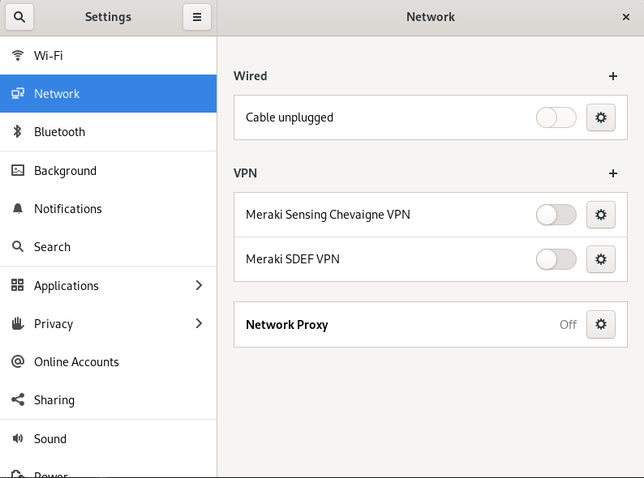

VPN Meraki et Fedora
Cela fait plusieurs années que je n'ai pas pu utiliser Linux de façon professionnelle à cause d'applications purement Windows et aussi un peu par facilité. Depuis peu, je n'ai plus à utiliser toutes ces applications je repars donc à la conquête de mon desktop avec une Fedora 33 fraichement installée …
Cela fait plusieurs années que je n'ai pas pu utiliser Linux de façon professionnelle à cause d'applications purement Windows et aussi un peu par facilité. Depuis peu, je n'ai plus à utiliser toutes ces applications je repars donc à la conquête de mon desktop avec une Fedora 33 fraichement installée.
De même que sous Windows, je dois utiliser des VPN Meraki dans le cadre de mon activité professionnelle. Il parait que sous Ubuntu, les VPN Clients Meraki fonctionnent directement, ce qui n'est pas le cas sous Fedora. Nous allons voir pourquoi et comment y remédier.
Les VPN Clients Meraki utilisent le protocole L2TP/IPSec qui n'est pas installé par defaut sur la distribution. La premièr étape est d'installer le plugin L2TP pour NetworkManager
# dnf install network-manager-l2tp-gnome
L'installation de ce paquet devrait aussi installer la dépendance network-manager-l2tp.
Avant de procéder à la configuration du VPN, il faut désinstaller le paquet libreswan et installer à la place le paquet strongswan. Libreswan ne supporte pas modp1024 (Diffie Hellman Group 2) pour IPSec car ce groupe DH est déprécié pour des raisons de sécurité. Cependant, les VPN Clients Meraki ne supportent que ce groupe DH pour l'établissement de la phase 1 et de la phase 2 d'IPSec. C'est clairement décevant de la part d'une appliance de sécurité mais pour le moment nous n'avons que ça... Strongswan quant à lui supporte toujours le groupe DH2.
Dans Ubuntu, c'est strongswan qui est installé par défaut, alors que Fedora utilise libreswan. C'est ce qui explique que les VPN Client Meraki fonctionnent directement sous Ubuntu, sans manipulations supplémentaires.
# dnf remove libreswan
# dnf install strongswan
Une fois cette installation effectuée, la configuration d'un VPN L2TP devient possible dans l'interface de gestion du réseau. Pour cela, il suffit de ce rendre dans les paramètres réseau et ajouter le VPN. Avant de valider, quelques modifications sont à faire pour ne pas conserver les paramètres par défaut.
En cliquant sur le + pour ajouter un VPN, on arrive sur cette nouvelle fenêtre. Celle ci permet de choisir le type de VPN à monter.
On choisi le VPN L2TP puis on arrive sur la configuration du VPN
Ici, on entre le nom du VPN, l'IP publique du MX Meraki ainsi que le nom d'utilisateur et le mot de passe. Une fois que c'est fait, on clique sur IPsec Settings.
On entre sa PSK puis on déplie les paramètres avancés. Là, il faut fixer les algorithmes de chiffrement des phases 1 et 2 IPsec. Pour chacune de ses phases, il faut entrer :
aes128-sha1-modp1024,3des-sha1-modp1024!
C'est ce pramètre qui n'est pas accepté par libreswan. Si vous utilisez libreswan avec ces paramètres IPsec, voici le messages d'erreurs qui va apparaitre dans les logs :
ike string error: IKE DH algorithm 'modp1024' is not supported
On ne touche à rien d'autre, on valide cette fenêtre puis on clique sur PPP Settings. Sur cette fenêtre, dans les paramètres d'authentification, on décoche tout sauf PAP et on laisse tout le reste par défaut.
Une fois ces paramètres validés, on peut tenter de se connecter au VPN. Cela doit fonctionner de suite. Si ça ne marche pas, il y a 2 moyens pour débuguer :
journalctl -fdans un terminal pendant la tentative de connexion pour voir ce qu'il se passe.- Sur le dashboard Meraki, se rendre dans Network Wide > Event Log pour visualiser ce que voit le MX.